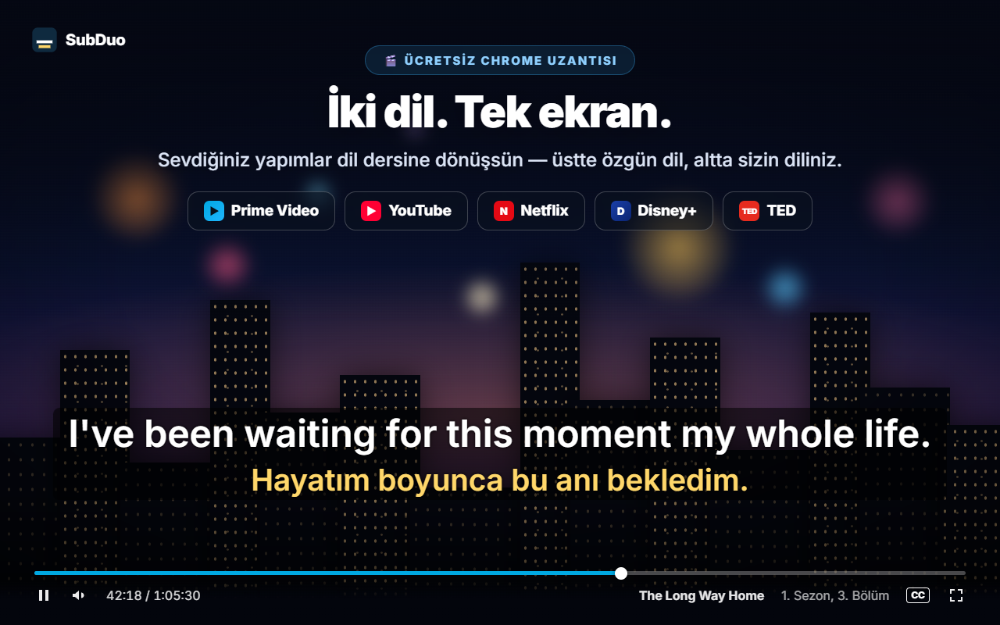
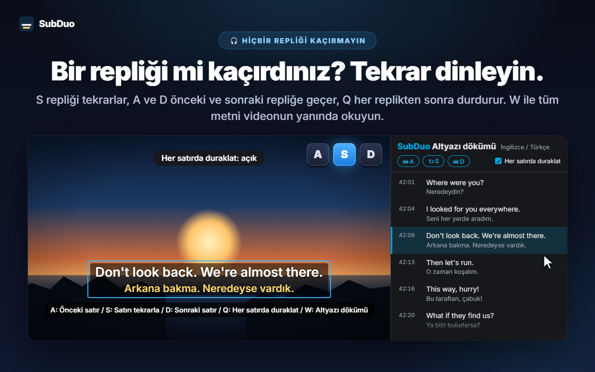
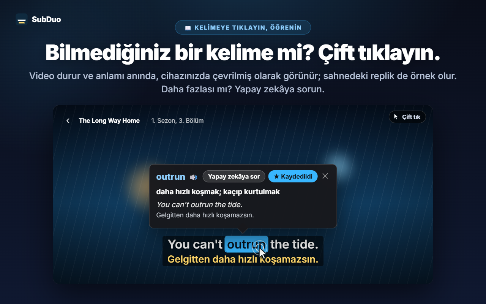
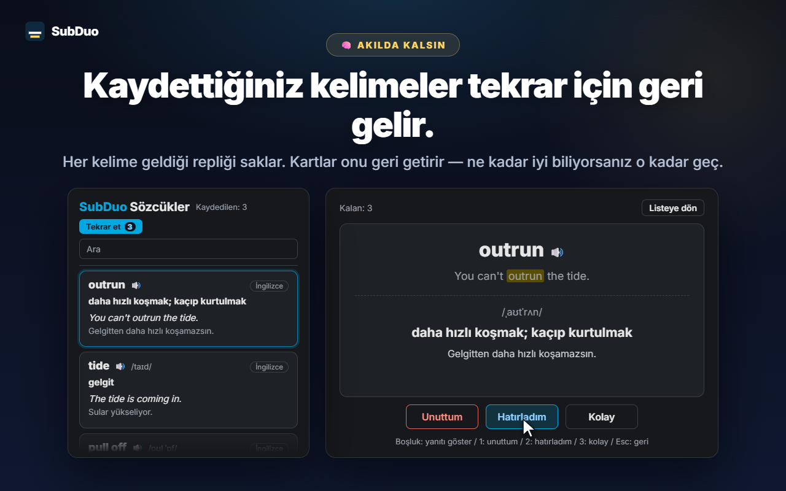

İstediğiniz iki altyazı dili
Sitenin sunduğu tüm altyazılar, YouTube'un otomatik oluşturulan altyazıları dahil, video oynatıldığında algılanır. Her satır için bir dil seçin ya da satırlardan birini gizleyin.
SubDuo iki altyazı dilini aynı anda gösterir: üstte özgün dil, altta sizin diliniz. Anlamını görmek için bir sözcüğe çift tıklayın, bir repliği tek tuşla yeniden dinleyin ve öğrendiklerinizi yerleşik sözcük listesinde saklayın.
Her sitenin zaten sunduğu altyazıları kullanır · Hesap gerekmez · Altyazılar tarayıcınızda kalır
Yayın platformlarının oynatıcıları aynı anda tek bir altyazı dili gösterir. SubDuo ikinci bir dil ekler — ve ondan öğrenmeniz için gereken araçları.
Uzantının ekranları, sizin dilinizde.

Yapımın sunduğu altyazılardan istediğiniz ikisini seçin: üstte özgün dil, altta sizin diliniz. Altyazıları istediğiniz yere sürükleyin, boyutunu değiştirmek için satırın üzerinde fare tekerleğini kaydırın; renk, saydamlık veya bulanıklık için sağ tıklayın.

Satırı tekrarlamak için S'ye, geri ve ileri gitmek için A ile D'ye, her satırdan sonra otomatik duraklatmak için Q'ya basın. W ile altyazı dökümünü Chrome'un yan panelinde açın — iki dil, satır satır — ve o ana gitmek için herhangi bir satıra tıklayın.

Video durur ve bir kart anlamı hemen gösterir; çeviriyi Chrome'un yerleşik çevirmeni cihazınızda yapar, örnek olarak da sahnenin kendi repliği kullanılır. Alt+sürükle ile bir ifade seçebilirsiniz. Bağlama uygun anlam, telaffuz ve örnek cümle için “Yapay zekâya sor”a dokunun.

Kaydedilen her sözcük geldiği repliği saklar. Sözcük listenizde arayın ve filtreleyin, telaffuzu dinleyin, bilgi kartlarıyla tekrar edin — bir sözcüğü ne kadar iyi biliyorsanız geri gelmesi o kadar uzun sürer.
Hesap yok, kurulum ekranı yok. Yükleyin ve oynatın.
SubDuo'yu Chrome Web Mağazası'ndan yükleyin, ardından Prime Video, YouTube, Netflix, Disney+ veya TED'de bir video oynatın.
SubDuo simgesine tıklayın ve üst satır için bir, alt satır için bir altyazı dili seçin. Listede yalnızca yapımın sunduğu altyazılar yer alır.
Anlamlarına bakmak için sözcüklere çift tıklayın, replikleri yeniden dinlemek için A, S veya D'ye basın, sözcük listenizi açılır pencereden açın.
İzleyerek öğrenenler için — altyazılar, ihtiyaç duyana kadar yolunuza çıkmaz.
Sitenin sunduğu tüm altyazılar, YouTube'un otomatik oluşturulan altyazıları dahil, video oynatıldığında algılanır. Her satır için bir dil seçin ya da satırlardan birini gizleyin.
Bir sözcüğe çift tıklayın veya Alt+tıklayın ya da Alt+sürükle ile bir ifade seçin. Oynatma duraklar ve cihazınızda yapılan çeviri videonun üzerinde görünür.
Bağlama uygun anlam, telaffuz ve örnek cümle, seçtiğiniz görüntüleme dilinde. Günde 20 açıklamaya kadar ücretsiz.
Sözcükleri tek tıkla kaydedin, arayın, dile göre filtreleyin ve 🔊 ile dinleyin. Bilgi kartları iyi bildiğiniz sözcükleri giderek daha seyrek getirir.
A önceki satır, S tekrar, D sonraki satır. Q her satırdan sonra duraklatır. Kendinizi sınamak için bir satırı bulanıklaştırın, kontrol etmek için üzerine gelin.
İki dildeki tüm satırlar videonun yanında. Geçerli satır vurgulanır; herhangi bir satıra tıklayarak oraya gidin. Açmak için W'ye basın.
Taşımak için sürükleyin, satır boyutu için kaydırın, ince ayar için ok tuşlarını kullanın; sola, ortaya veya sağa hizalayın. Her satırın rengi, saydamlığı ve bulanıklığı için sağ tıklayın.
YouTube'da büyük, Netflix'te sade altyazılar — ayarlar her site için ayrı kaydedilir ve Chrome'unuz üzerinden eşitlenir.
Menüler, çeviriler ve yapay zekâ açıklamaları seçtiğiniz görüntüleme dilinde gösterilir; bu dil Chrome'un dilinden farklı olabilir.
SubDuo, her sitenin zaten tarayıcınıza gönderdiği altyazı dosyalarını okur ve onları orada çizer. Dışarı gönderdiği tek şey, yapay zekâya sormayı seçtiğiniz ifade ve onun altyazı satırıdır.
Altyazılar tarayıcınızda işlenir ve çizilir. Ayarlarınız, sözcük listeniz ve izleme geçmişiniz geliştiriciye gönderilmez. Sözcük çevirileri Chrome'un yerleşik çevirmeniyle cihazınızda yapılır.
“Yapay zekâya sor”a dokunduğunuzda seçilen ifade, onun altyazı satırı ve ekrandaki diğer satır, dil kodları ve rastgele bir cihaz kimliği (günlük sınır için) SubDuo sunucusuna gider; sunucu açıklamayı OpenAI'dan ister. Hizmetin işletilmesi için IP adresiniz işlenir.
Kaydolmanız gerekmez. Uzantıda reklam ve analiz aracı bulunmaz.
Ayarlar ve sözcük listesi için “storage”, güncellemelerden sonra açık sekmelere yeniden bağlanmak için “scripting”, altyazı dökümü için “sidePanel” ve yalnızca desteklenen beş siteye erişim.
Chrome Web Mağazası'ndan saniyeler içinde yüklenir